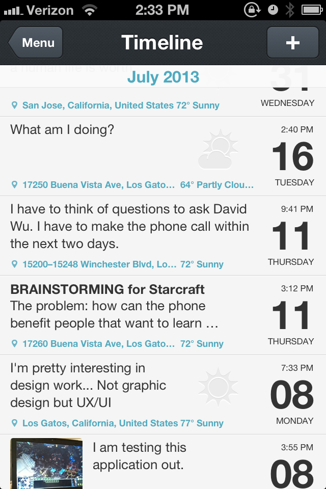

Inspiration: Day One
By Michael Ninh
Day One is a iOS application that is a virtual journal. This application is relevant to adAstra because Day One deals with recording, storing, displaying, and updating timal data. Since Day One is a journal application, I feel that each entry into the journal is analogous to entering in an event into adAstra. There are different screens for Day One, but the above screenshot is what I see similar to a calendar.
I really like the visual aspects of this application, especially of the screen shot listed above. There is just enough information displayed and all the visual elements work in synergy and give a very refined and aesthetically pleasing look. Since the information layout of adAstra is dominantly in list form, looking at how Day One displays information in list form can help us find different ways to display information in a clear manner.
In addition in displaying information very neatly, Day One also makes it very easy to create, edit, or delete existing posts. We can look at Day One to figure how to make the functionalities of booking rooms, changing rooms, or reserving a room clear.